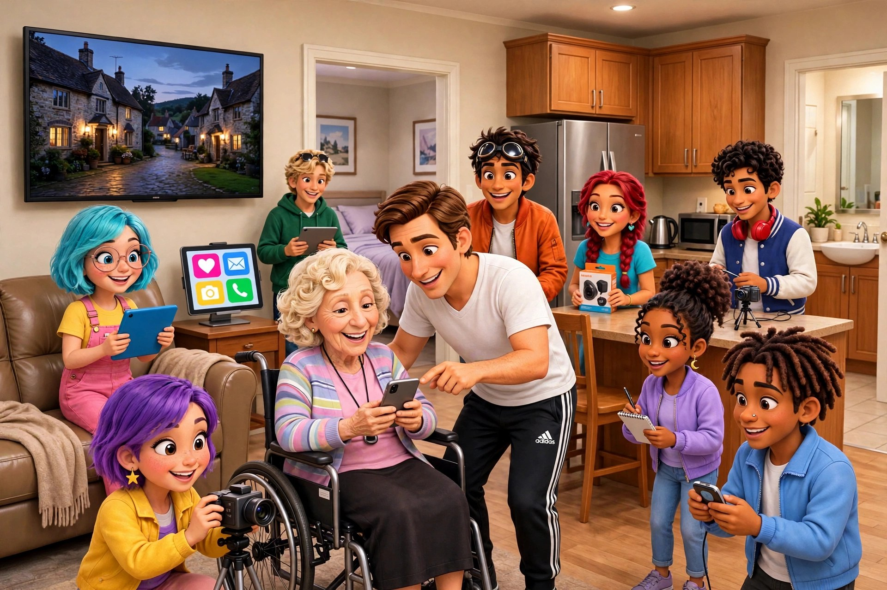

A personal page for their iPad and their phone — their family easy-to-find buttons at the top, and the things they love right there under it.
My mom is 89 and lives in assisted living in Boca Raton. A while back she fell in her apartment. She pressed the monitor pendant around her neck — the one that's supposed to bring help — and then she waited. An hour.
I asked the facility about it. They meet their standards: every resident has a device, and on average, help arrives in about 20 minutes. But an average can hide an hour. And while she waits, she hears nothing — there's no screen that says someone is coming, no way to reach the people who would drop everything.
Everybody has a phone these days. Nobody had built her a simple one. So I did.
Her page gives her a reason to keep her iPad with her — it has the thing she loves checking every morning. And because the iPad is with her, the big family buttons at the top of that same page are always within reach.
Her phone is the one she carries everywhere — so on her phone, that same page opens straight onto the help buttons, like a pager. The stocks and everything else are still there, a scroll down.
Rose isn't a real person — she's our example, so no family's private page is ever shown around. Your parent's page would have their people and their favorite things. And on a phone — go ahead and open this page on yours — the sample turns into the phone version: the red help button first, the call buttons stacked big under it, everything else a scroll down.
A page like this isn’t something you download. I come to your parent, build the page around their people and the things they love, put it on their iPad and their phone, and then we practice the buttons together — calling you, asking for help — until they’ve done each one with their own hands. It works the same whether your parent lives in a residence or in their own home. Made for your parent. Set up on their iPad. Practiced with them. Kept simple.
Pricing — just ask me. Every page is made one at a time, by hand, around your parent’s people — so the price depends on what theirs needs. Email or text me below and I’ll tell you straight. What’s included either way: I come to your parent, build the page with you, set it up on their iPad and phone, and practice the buttons with them until they’ve done each one with their own hands.
Far away? I can build the page the same way at a distance — you put it on their iPad and phone with my step-by-step guidance: written steps and a practice call with you, so you can teach them the buttons the way I would.
Keeping it looked after is optional. If you want me to keep checking the buttons and making small changes, we can talk about that too — and you can stop it any time. Without it, the page is still theirs and still works. The setup is the work; once it’s built, using it costs nothing.
This page works alongside the pendant, never instead of it. It makes it easier to call or message family — but it does not monitor your parent, dispatch help, or guarantee a reply. For urgent help, the pendant and the building’s own plan come first. And honestly: the text buttons open a message with the words already written — your parent still taps Send. That’s the one step we practice together until it feels easy.
Every page is made one at a time, by hand, with the family — your parent's people, their phone numbers, and the things that make it theirs. Email or text me, tell me a little about your parent, and we'll talk about what their page should have.
✉️ Email Gary 💬 Text Gary— Gary Spanier, Hollywood, Florida.
I visit my mom every Thursday. This started with her. 💛
The sample page above is fictional. This is a personal project by Gary Spanier and is not affiliated with any assisted-living facility.